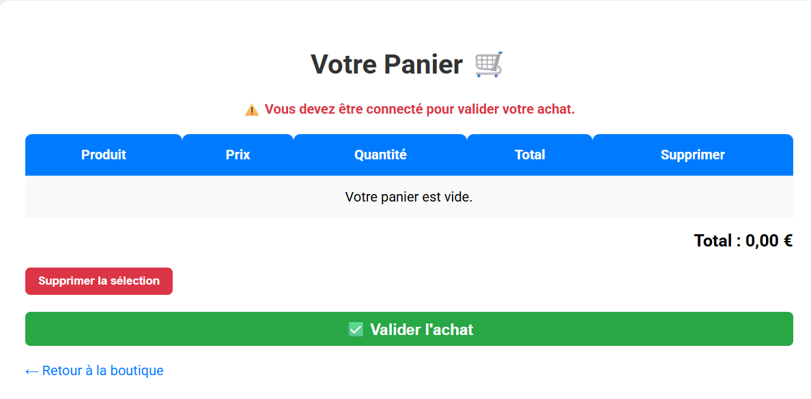
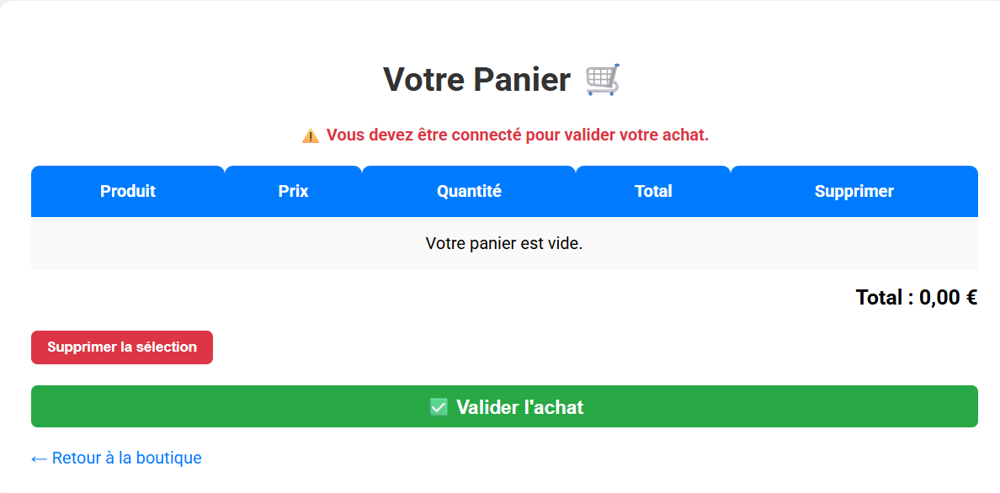
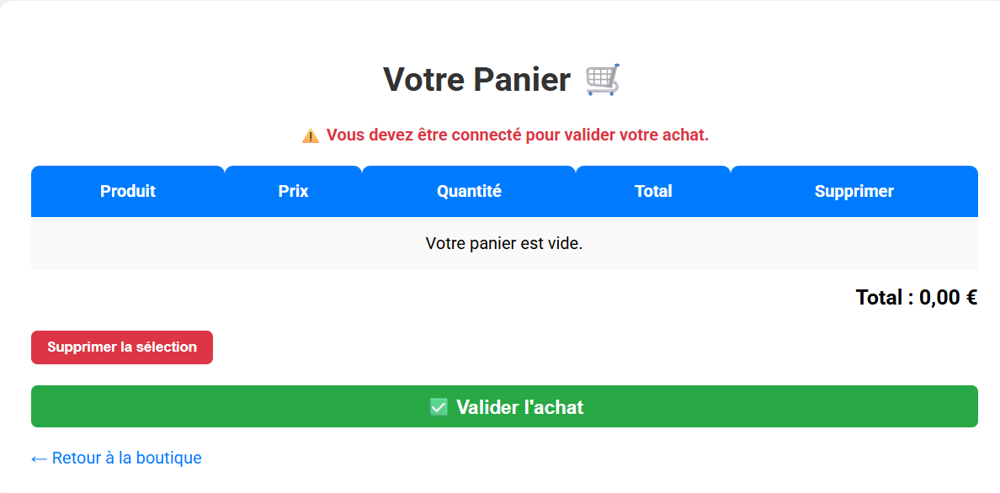

📸 Aperçu du site
 

Création d’un site web marchand complet dans le cadre du BTS SIO option SLAM.
Le projet PPE1 consistait à concevoir un site e-commerce permettant aux utilisateurs de naviguer dans un catalogue de produits, de les ajouter à un panier et de simuler une commande. Ce projet m’a permis de mettre en pratique les bases du développement web et de la programmation côté serveur.

Ce projet m’a permis de mieux comprendre le fonctionnement d’un site dynamique, d’utiliser une base de données pour stocker des informations et d’appliquer les bonnes pratiques de développement. J’ai également appris à travailler en équipe et à documenter mon code.